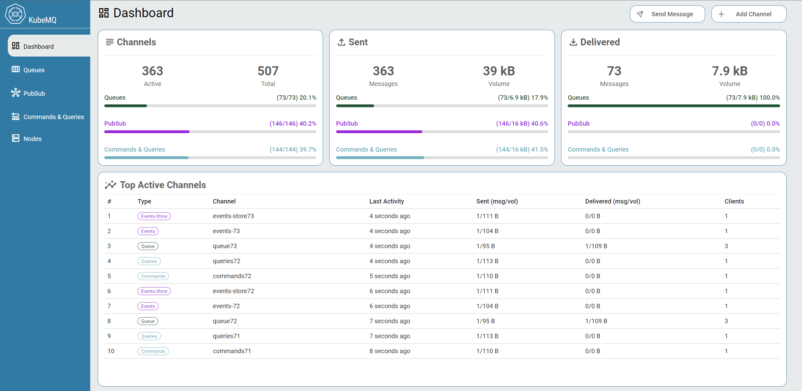
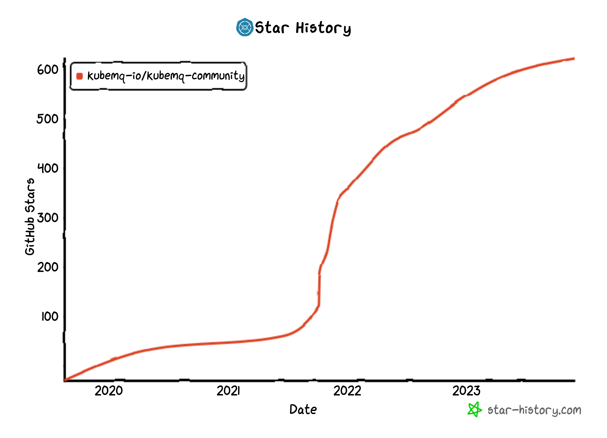
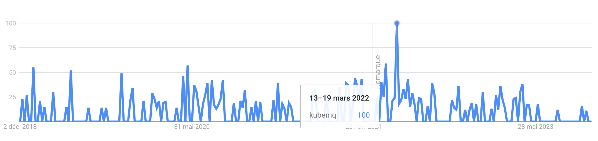

A little while ago, a project partner was looking for a message queue broker. They probably searched for something among the terms "message queue Kubernetes" on their favourite search engine and went with KubeMQ. This week, I deployed some of their work in our test environment and learned about KubeMQ for the first time.
As someone who just decided to use RabbitMQ and not Kafka and read too much about message queue software, I was surprised to discover a new message queue broker. The frontpage looks decent, with a clean logo, fair documentation, a Cloud Native Computing Foundation (CNCF) logo, easy installation scripts, and many great promises. It's open-source with commercial support, which is a good thing.
I quickly found the classic comparison page that conveniently compares KubeMQ with Kafka, RabbitMQ, AWS SQS, and Redis. But it immediately looks wrong. While writing this post, I noticed the table is entirely mixed up. It had been mixed up differently earlier in the week and in another way in the latest snapshot from the web archive. But you can read that RabbitMQ doesn't scale or that Kafka is very popular but is Java-based. Redis has its column in, but it's empty, and overall, the table contains many bold, unsourced claims that sound a bit too good to be true.
I'm a bit surprised to see that the Cloud Native Computing Foundation has a project with such a comparison table, but I then understand that KubeMQ is not a CNFC project or incubating project, and the KubeMQ front page claims to be a CNCF member and not a project. Moreover, I didn't see KubeMQ in the CNCF members list while writing this post.
I then did the classic GitHub repository smell test. The kubemq-io/kubemq-community repository has about 600 stars and 25 relatively old issues. This kind of ratio is not great. It smells hyped but unused tech', or fake stars. The star's history could be looking better, too. I wonder if KubeMQ bought fake GitHub stars at some point or got very popular for a little while. I didn't see any popular post on HN or matching patterns with the Google Search trends about KubeMQ. But it could have been on the front page of some non-English speaking media.
 The repository has relatively little activity with one main contributor; the last release has no git tag or GitHub release, and the commit messages are often "wip" and "update". I'm not very good at this myself; my git histories are a mess because I don't care about them, I'm often the only contributor, and I don't do releases well every time, so I'm a bit hypocritical to judge on this.
Anyway, I have to install this, and our test environment is supposed to handle all kinds of software as long as it runs on Kubernetes. KubeMQ is a Kubernetes native message queue broker, so it should be fine.
switch env {
case "kubernetes":
return nil, fmt.Errorf("running kubemq community version on kubernetes is not supported anymore, please use kubemq commercial version")
Well no. The Apache-2.0 OpenSource version refuses to start if it detects a Kubernetes environment.
Of course, someone made a fork and removed the telemetry and the Kubernetes restriction. A few minutes later, KubeMQ was running well in our Kubernetes test environment.
I'm not sure what to think about this. I understand that one needs to eat, and pushing for a commercial version by removing features from the open-source version is nothing new. But I don't like this.
About the qualities of KubeMQ, even if KubeMQ doesn't do as well as claimed, being better than RabbitMQ, Kafka, and Redis in every way at the same time is bold, it may still be a valuable tool for some use cases. If all the advertised features work most of the time, even slowly or with significant limitations, this is great and welcome open-source software. The author definitely has some talents from my brief look.
When it comes to the claims of doing much better than all the best message queue brokers out there, I will not verify. I do not trust KubeMQ.
Antoine - 2023-11-29 - GitHub repository of this post